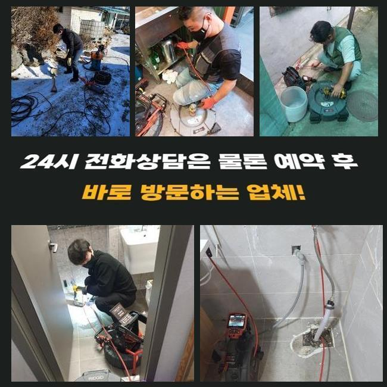
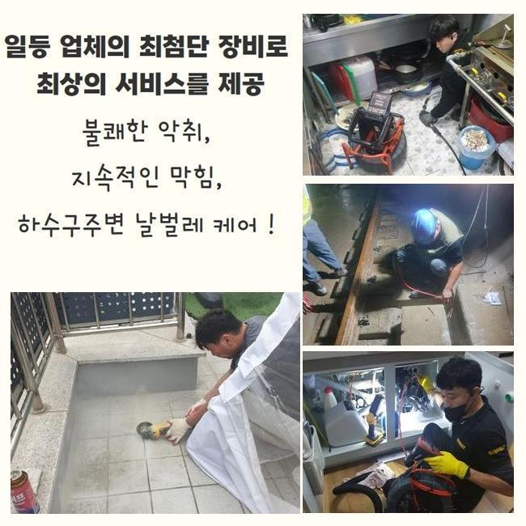
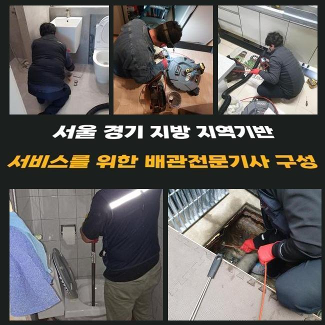
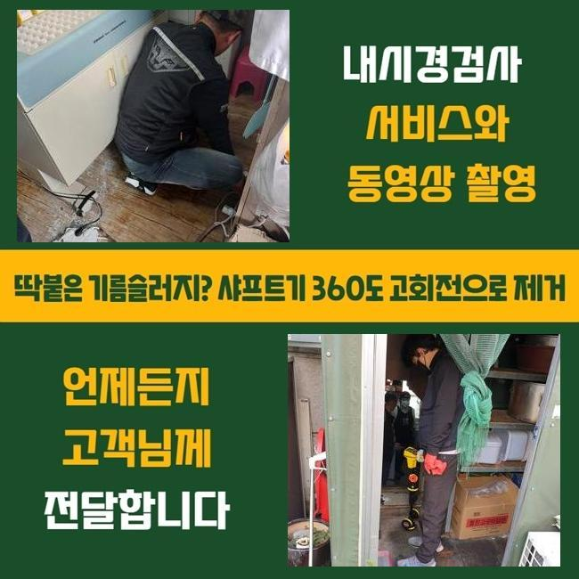
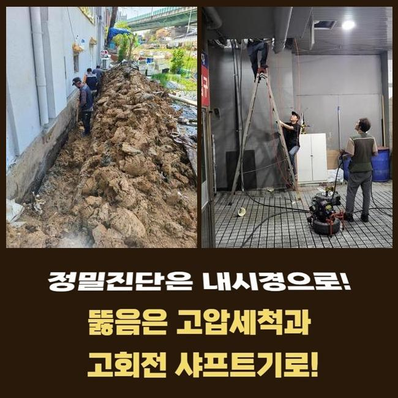
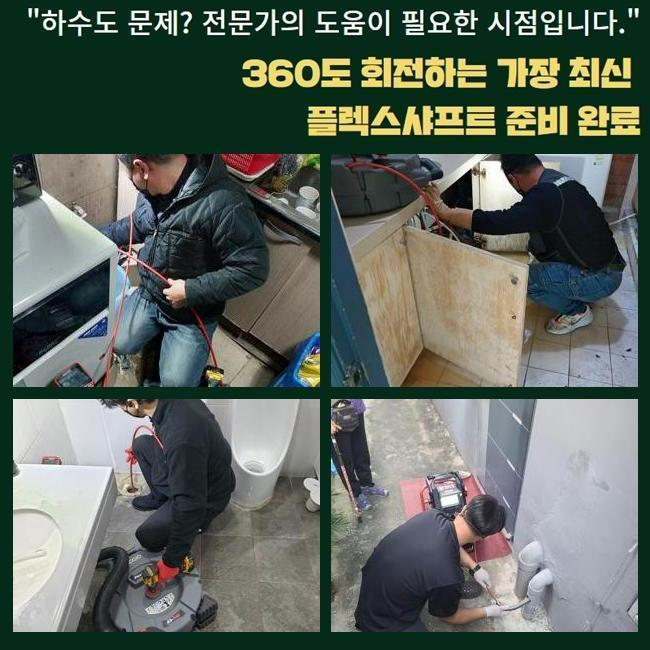
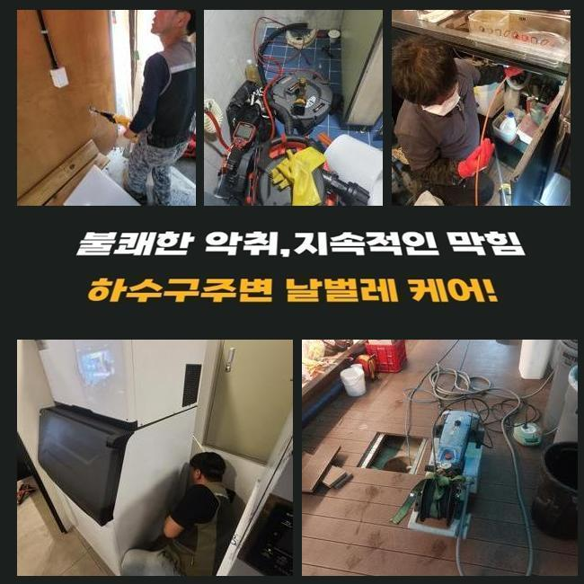

🏠 인천 공촌동씽크대배수관막힘 신현원창동 횡주관청소 설비출장
인천 싱크대막힘 전문 시공 후기

📋 작업 개요
- 위치: 인천
- 서비스 유형: 싱크대막힘, 배관막힘, 집수정막힘, 누수수리, 역류해결, 뚫는업체, 배관청소, 고압세척, 설비공사, 악취차단
- 작업 일시: 2024. 12. 4. 10:05
- 업체명: 하수구수사대 (010-5615-2118)
🔍 문제 상황
인천 공촌동씽크대배수관막힘 신현원창동 횡주관청소 설비출장
갑작스레 가정내에서 배관이 막혀서 당혹스러우셨던 상황이 한두번쯤은 있으셨을것 같아요
개수대에서는 많은양의 찌꺼기성분이 적층되기 쉽기때문에 빈번하게 이러한 상황이 벌어질수 있어요
개수대 사용량이 많은 식당들은 막힘상황이 더욱 빈번히 나타나죠
저번주 인근 분식집에서 물막힘이 생겼다고하여 방문드렸는데요
본 글에선 시공한 현장모습을 통해서 배수관련 장애가 발생했을시 정황들과 세정하는 방식을 한층더 정확히 소개해드리겠습니다
한식집을 하시는 손님께서 다급히 연락하셨는데요
바닥배수공으로 오폐수가 사라지지 않는다 말하셨어요
현재 영업하는 상황이었기에 빠르게 마무리지어야했고 공구들을 세팅한뒤에 지점으로 향했어요
음식점에 도착한 후 주방시설을 우선해서 점검하였죠
싱크대쪽과 바닥배관에서 막힘이 생긴 사태를 볼수 있었죠
주방공간의 배관은 다소 불규칙하게 설비되었는데 다양한 문제요소가 보였어요
전체적인 구조를 검사해보니 배출된물이 주방바닥에 장시간 잔류하는 상황이었죠
조사과정에서 배수관에서 그리스트랩쪽으로 향한 장소에서 막힘발생이 된것이 확인되었죠
그리스트랩은 식당이나 수영장에서 수질오염을 방지하려고 설비하는 것으로 슬러지를 걸러내주는 기능을 수행하죠

🔎 원인 분석
💡 전문가 진단: 정밀 진단 장비를 사용하여 슬러지의 고착 여부를 판명하고 타격/세척 작업을 실시했습니다.
그리고 하수관에서 배출되는 구린내와 해로운 가스 등을 차단시키고 물의 수위를 일정히 유지시키기도 합니다
정체가 생기지 않고 장기간 유지하려면 거름장치를 부지런히 세정해줘야 해요
그리스트랩 부분에서 펌프쪽이 망가져버려 제역할이 안되는 상태였어요
우선적으로 거름망부품을 제거하고 그리스트랩에 펌프장치를 가설하는 공정을 실시하였죠
배관세정을 수행하기 이전에 흡입기계로 정체되었던 이물들을 정리하였습니다
그다음에 하수관 안쪽을 배관카메라를 삽입해 관측하였습니다
상황을 진단해보니 배수관의 하단부위에 끈적한 기름찌꺼기가 가득했어요
관로의 석회찌꺼기와 엉겨서 통로가 좁아져서 정체가 된거였죠
해당 물질들로 인해 펌프기능이 낙후되어 고장난걸로 판단했습니다
저희들은 정체된 관로를 뚫어내려고 샤프트기계를 적용하기로 결단하였어요
플렉스해당 공구는 내구성이 강한 분쇄장비로 노즐 끝단의 쇠사슬의 회전으로 오래 묵은 잔재들을 분리시킬수 있죠
관로 벽면에 뭍어있는 기름때 등을 플렉스샤프트로 파쇄하면서 하수관을 정리해나갔습니다
플렉스샤프트를 쓸땐 통수업무와 동시적으로 하수관의 세척까지 된다는 이점이 있죠
체인을 조절해서 작동 폭을 조절할수가 있으므로 더더욱 능률적으로 소제할수가 있어요
플렉스샤프트를 쓸때 과한 힘으로 시공한다면 관로에 금을 가게 만들수도 있는데요

🔧 작업 과정
그리된다면 문제가 없는 관까지 제거해야되는 사태에 직면할수있어 숙련된 기술력으로 접근하여야 하겠죠
하수관 청소과정을 끝낸 다음엔 방수마감 처리도 실시하였죠
기존의 펌프부품을 제거한뒤 추가로 방수마감을 한건데요
그것을 통해 배관트랩과 배수관련 장애를 처리할수가 있었어요
음식물을 취급하는 곳은 정기적 세척이 불가결하다고 볼수 있습니다
물막힘이 생기면 일시적인 불편함과 더불어 운영상의 문제도 생겨날수가 있어서랍니다
하수관의 부품들을 조립할 땐 세밀한 작업이 필수입니다
혹여나 잘못된다면 역류나 누수가 발발하기도 해요
그렇기 때문에 저희는 집수정으로 물이 잘 통하도록 정밀하게 공사하였어요
그래야 오수 처리가 적절하게 진행된답니다
싱크대그리스트랩이 망가지면 많이 당혹스러우실텐데 전문 수리기사의 진단을 받으신다면 예사롭게 정리할수 있답니다
조립을 마치고 나서는 확실하게 물이 빠지는지 진단하는 일이 불가결하다고 볼수 있습니다
저흰 설치를 한 다음엔 내시경기기로 부품이 온전히 가동되는지 관측하게 됩니다
그리하여 안정성을 보강하고 이차적인 문제점을 예방하는 효과가 있는거죠
펌프의 진단을 마친뒤에 커버를 올리는 공정을 속행했습니다
전체적인 업무과정은 체계적으로 실행되어야 큰 변수가 생기지 않은채로 종결지을수 있어요
테크닉이 부족한 지점에 의뢰하시면 예기치않은 사태가 벌어지기도 하죠
그렇기 때문에 주방개수대나 욕실에서 배관막힘이 생겼을때 누구에게 맡기느냐가 중요한 부분이죠
그리고 배관에서 역류증세가 표출되었다면 신속히 정리하는게 중요한 부분이죠
고장을 해결하고 주위를 정돈하는 와중에 위층에 사시는 분께서 배관막힘이 발생했다며 수리를 요청하셨죠
서둘러서 마무리지은뒤 방문드려 증상을 살펴보았죠
해당 지점도 전반적으로 배관이 막혀있다는 사실을 파악했고 샤프트기기로 세정을 단행하였어요
오랜기간 쌓여왔던 석회물질과 슬러지들을 빠르게 정리하였어요
내시경장비로 내부를 세심하게 점검하였고 사용요령을 안내하고 뚫음을 끝마쳤죠


✅ 작업 완료
저희팀은 배수관의 정체 사유를 세세하게 분석하고 마땅한 기계를 바탕으로 고장을 처리해드립니다
주방의 배수관에서 발발하는 막힘증세의 주요 동기는 기름때와 관련 음식잔해들입니다
그런 경우에 단단해진 이물들을 세척해야 고장이 안 나타납니다
간소하게 길만 내어서는 완전한 통수에 다가설수가 없죠
재발이 안일어나려면 전문가의 장비를 토대로 정밀하게 수선하고 본질적인 까닭을 찾아서 처치하여야 한답니다
저흰 체증이 발발하게 된 연유를 정밀하게 파악한다음 기기를 선택하고 작업해드려요
풍부한 노하우와 경험을 통하여 신속히 막힘을 처리하고 있사오니 편안한 마음으로 저희쪽에 의뢰하시길 당부드려요




⚠️ 베란다 누수 및 방수 관리 방법
- ✅ 비가 많이 올 때 창틀 주변이나 아래층 천장에 얼룩이 생기는지 정기적으로 확인해 보세요.
- ✅ 우수관 주변 실리콘 마감이 들뜨거나 깨진 틈새가 있는지 손상 여부를 수시로 체크하세요.
- ✅ 베란다 바닥 타일의 줄눈(메지)이 소실되면 그 틈으로 물이 침투하여 누수가 유발됩니다.
- ✅ 누수 의심 증상 발견 시 방치하면 아래층 손실이 커지므로 즉시 전문가의 진단을 받으십시오.
💡 핵심 정리
- 확실한 장비 작업(내시경 점검 및 샤프트 스케일링)으로 원인을 뿌리 뽑습니다.
- 작업 후 1년 이내에 동일한 부위 재발 시 100% 무상 A/S 서비스를 보장합니다.
- 서울 · 경기 · 인천 전 지역에 24시간 언제든 긴급 출동할 수 있도록 항시 대기 중입니다.
❓ 자주 묻는 질문 (FAQ)
🚨 인천 싱크대막힘 문제로 고민이신가요?
정확한 원인 진단과 확실한 시공으로 재발 없는 해결을 약속드립니다.
24시간 긴급 출동 | 서울 · 경기 · 인천 전지역 | 1년 내 재발 시 무상 A/S